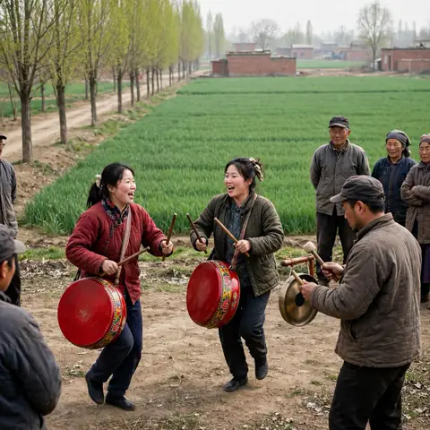
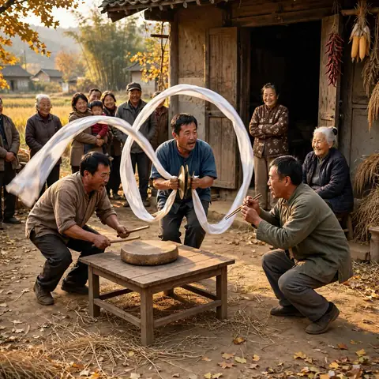
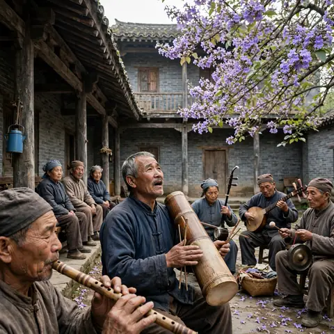
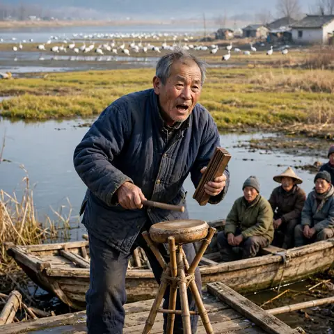
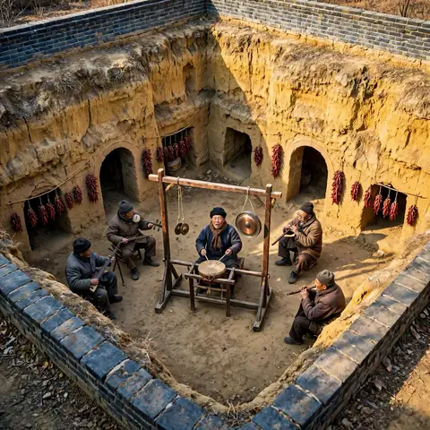
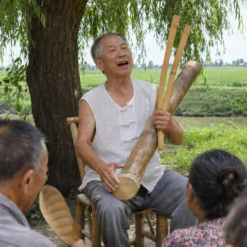
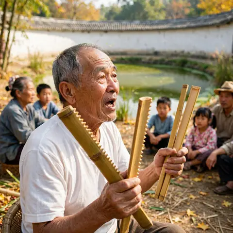
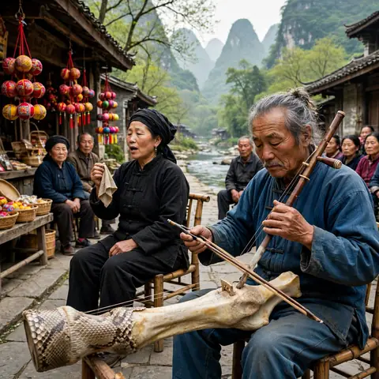
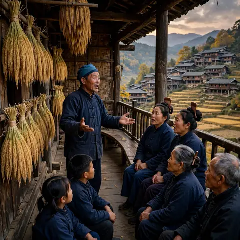
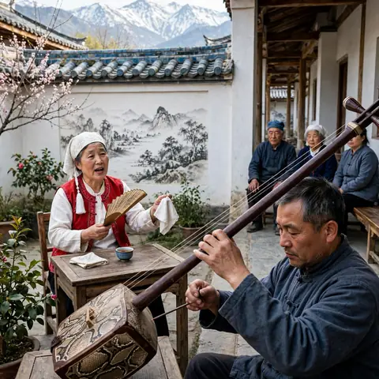

十大雅集 / 弦话千秋
V
弦话千秋
曲艺
收录国家级代表性项目 145 项、213 子项，申报地区涉及 31 个省级行政区，另有中直单位申报的 1 子项。子项最多的地区：浙江省（28）、山东省（13）、湖北省（13）。
项目档案库
145 项、213 子项
（本页配图如无特别标注，均为 AI 生成的示意图，非实拍。）
第 3 / 3 页（V-121 至 V-145）
- V-121
永新小鼓
- 江西省永新县2014 第四批 · 新增项目官方页 →
- V-122
山东花鼓

- 山东省菏泽市2014 第四批 · 新增项目官方页 →
- V-123
跳三鼓

- 湖北省石首市2014 第四批 · 新增项目官方页 →
- V-124
湖南渔鼓
- 湖南省2014 第四批 · 新增项目官方页 →
- V-125
桂林渔鼓
- 广西壮族自治区桂林市2014 第四批 · 新增项目官方页 →
- V-126
宁夏小曲
- 宁夏回族自治区银川市2014 第四批 · 新增项目官方页 →
- V-127
托勒敖
- 新疆维吾尔自治区尼勒克县2014 第四批 · 新增项目官方页 →
- V-128
蔡家洼五音大鼓
- 北京市密云区2021 第五批 · 新增项目官方页 →
- V-129
屯留道情

- 山西省长治市屯留区2021 第五批 · 新增项目官方页 →
- V-130
陵川钢板书
- 山西省晋城市陵川县2021 第五批 · 新增项目官方页 →
- V-131
苏北大鼓
- 江苏省宿迁市宿城区2021 第五批 · 新增项目官方页 →
- V-132
三跳
- 三跳（湖州三跳）浙江省湖州市2021 第五批 · 新增项目官方页 →
- V-133
南昌清音
- 江西省南昌市东湖区2021 第五批 · 新增项目官方页 →
- V-134
都昌鼓书

- 江西省九江市都昌县2021 第五批 · 新增项目官方页 →
- V-135
江西莲花落
- 江西省萍乡市2021 第五批 · 新增项目官方页 →
- V-136
陕州锣鼓书

- 河南省三门峡市2021 第五批 · 新增项目官方页 →
- V-137
天门渔鼓

- 湖北省天门市2021 第五批 · 新增项目官方页 →
- V-138
竹板歌

- 广东省梅州市兴宁市2021 第五批 · 新增项目官方页 →
- V-139
末伦

- 广西壮族自治区百色市靖西市2021 第五批 · 新增项目官方页 →
- V-140
嘎百福

- 贵州省黔东南苗族侗族自治州2021 第五批 · 新增项目官方页 →
- V-141
旭早
- 贵州省黔南布依族苗族自治州三都水族自治县2021 第五批 · 新增项目官方页 →
- V-142
大本曲

- 云南省大理白族自治州大理市2021 第五批 · 新增项目官方页 →
- V-143
古尔鲁
- 西藏自治区拉萨市2021 第五批 · 新增项目官方页 →
- V-144
陕西快板
- 陕西省2021 第五批 · 新增项目官方页 →
- V-145
龙头琴弹唱
- 甘肃省甘南藏族自治州玛曲县2021 第五批 · 新增项目官方页 →
名录数据来源：中国非物质文化遗产网